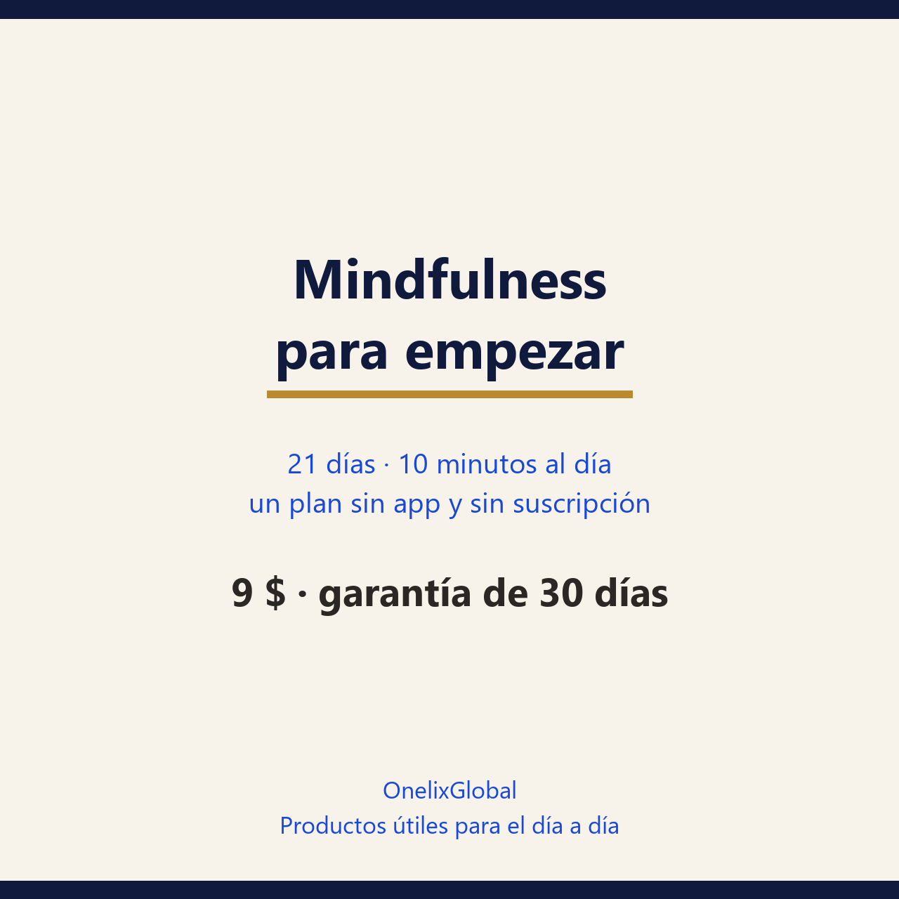

El guion exacto de la práctica y un plan de tres fases para quien ya lo intentó y lo dejó, o nunca lo intentó y no quiere pagar una suscripción.
30 días de garantía: si no te sirve, escribes y se resuelve.
Pago seguro en Gumroad · PDF para leer en el móvil, la tablet o impreso.

30 páginasPDF · españolDe 0:00 a 1:00 postura y arranque; de 1:00 a 4:00 respiración; de 4:00 a 7:00 cuerpo; de 7:00 a 9:00 sonidos y pensamientos; de 9:00 a 10:00 cierre. Se lee una vez y después se hace de memoria.
«No puedo dejar la mente en blanco» es el malentendido que hace dejar la práctica. El objetivo no es vaciar la cabeza: es notar que te fuiste y volver. Cada regreso cuenta como una repetición.
La semana 3 añade una hoja de emergencia de tres minutos para usar en una llamada difícil, un correo incómodo o una noche de dar vueltas, con los ojos abiertos y en cualquier sitio.
Los programas de mindfulness mueven la aguja entre 0,2 y 0,4 desviaciones estándar en ansiedad y estrés, y no se mostraron superiores a fármacos, ejercicio u otras terapias (Goyal, 2014; Goldberg, 2018). La guía lo publica tal cual.
Preferimos decirlo claro antes de que pagues.
ya probaste meditar con una app y lo dejaste; si crees que no puedes porque no dejas de pensar; si quieres diez minutos al día sin cojín especial, sin incienso y sin suscripción.
buscas curar un trastorno de ansiedad o una depresión: eso necesita tratamiento y esta guía lo dice en la primera página. Tampoco si esperas «reprogramar» tu cerebro: el dato del hipocampo sale de un estudio con 16 personas, y el famoso «la meditación encoge la amígdala» no sale de ahí. Si tienes antecedentes de trauma, disociación o psicosis, habla antes con un profesional; y si la práctica te deja peor de forma repetida, se para.
Lo primero que cambia es el aviso: antes tardabas una hora en darte cuenta de que llevabas la tarde en modo automático; a las tres semanas te das cuenta en minutos.
No. Silla, temporizador y este guion.
Es lo esperado. Si vuelves veinte veces en diez minutos, hiciste veinte repeticiones, no veinte errores.
Un día no rompe nada; tres sí. Al siguiente no dobles el tiempo: vuelve a diez minutos.